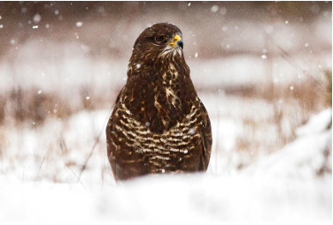
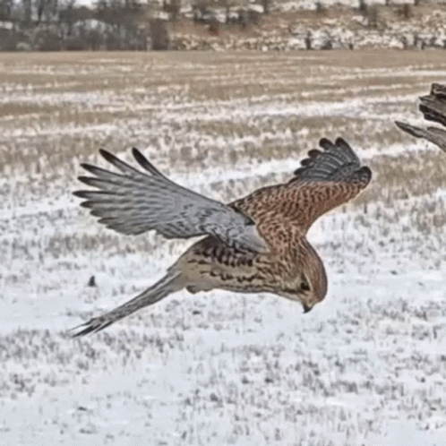

Myszołów zwyczajny jest najliczniejszym polskim ptakiem drapieżnym - szacuje się około 50 tys. par. Występuje w całej Polsce. Gniazda buduje na wysokich drzewach z gałęzi, mchów i zielonych części roślin, używając tego samego przez kilka lat. Zakłada je najchętniej na granicy lasu z terenami otwartymi - łąkami i polami - ale wybiera też zadrzewienia śródpolne, stare parki, a nawet pojedyncze drzewa. Doskonale odpowiadają mu mozaikowe krajobrazy z lasami przeplatającymi się z polami, łąkami i terenami bagiennymi.
| Głównym łupem myszołowa są gryzonie - norniki, nornice rude, myszy i szczury - a także krety, młode króliki i zające. Rzadko chwyta duże płazy czy młode, jeszcze słabo latające ptaki. Zimą chętnie żywi się padliną.Myszołów poluje na terenach otwartych, wypatrując ofiar z wysokiego punktu - gałęzi, czubka drzewa lub słupa energetycznego. Czasem wykonuje powolne loty patrolowe, podczas których zawisa w miejscu, trzepocząc skrzydłami. Gdy wypatrzy zdobycz, pikuje i chwyta ją ostrymi szponami, w razie potrzeby dobijając dziobem. |
 |
|---|---|
| Myszołów, jak większość dziennych ptaków drapieżnych, potrafi latać bez wysiłku, wykorzystując kominy termiczne - słupy ciepłego, unoszącego się powietrza powstające nad nasłonecznionymi terenami. Ptak rozkłada skrzydła i krąży w górę, a następnie szybuje w wybrane miejsce niczym paralotnia. Ułatwiają mu to worki powietrzne - wypełnione ogrzanym powietrzem przestrzenie w ciele, które zmniejszają jego ciężar. - |
 |